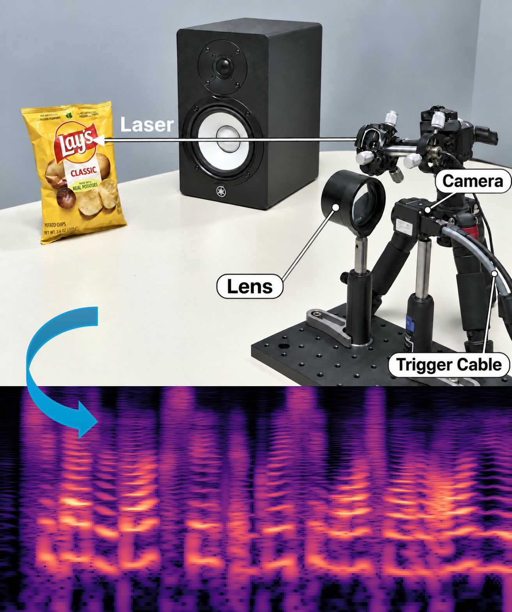
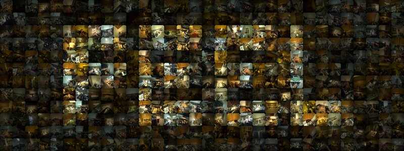
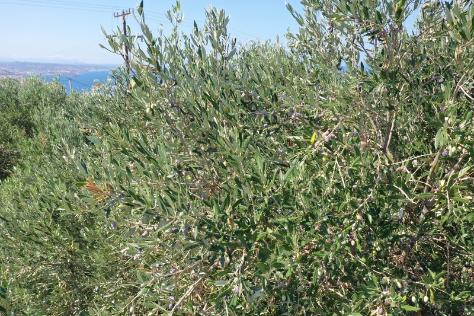

Research
I’m interested in using vision to sense things cameras aren’t supposed to capture.
|
|

|
EvSpeech: Learning to Reconstruct Speech with an Event Camera
Yianni Karabatis, Levi Burner, Eadom Dessalene, Matthew Nolan, Christopher A. Metzler, Cornelia Fermuller, Ramani Duraiswami†, Yiannis Aloimonos†
† Equal advising
Submitted to ICASSP, 2027
A learned model recovers intelligible speech from the event stream of a laser
speckle pattern on a vibrating surface, trained end to end on real recordings
rather than simulation.
|
|

|
FEEL: Force-Enhanced Egocentric Learning for Physical Action Understanding
Eadom Dessalene,
Botao He,
Michael Maynord,
Yonatan Tussa,
Pavan Mantripragada,
Yianni Karabatis,
Nirupam Roy,
Yiannis Aloimonos
ECCV, 2026 (Oral Presentation)
project page
/
arXiv
/
dataset
A large-scale egocentric dataset pairing video with force measurements from
piezoresistive gloves, for learning physically grounded action representations.
|
|

|
Detecting Olives with Synthetic or Real Data? Olive the Above
Yianni Karabatis,
Xiaomin Lin,
Nitin J. Sanket,
Michail G. Lagoudakis,
Yiannis Aloimonos
IROS, 2023
project page
/
arXiv
Training on a mix of mostly synthetic and a little real data improves olive
detection by up to 66% over the small real-only sample.
|
|
Teaching
|
Teaching Assistant: Computer Vision, Web Design, and Data Structures
|
|